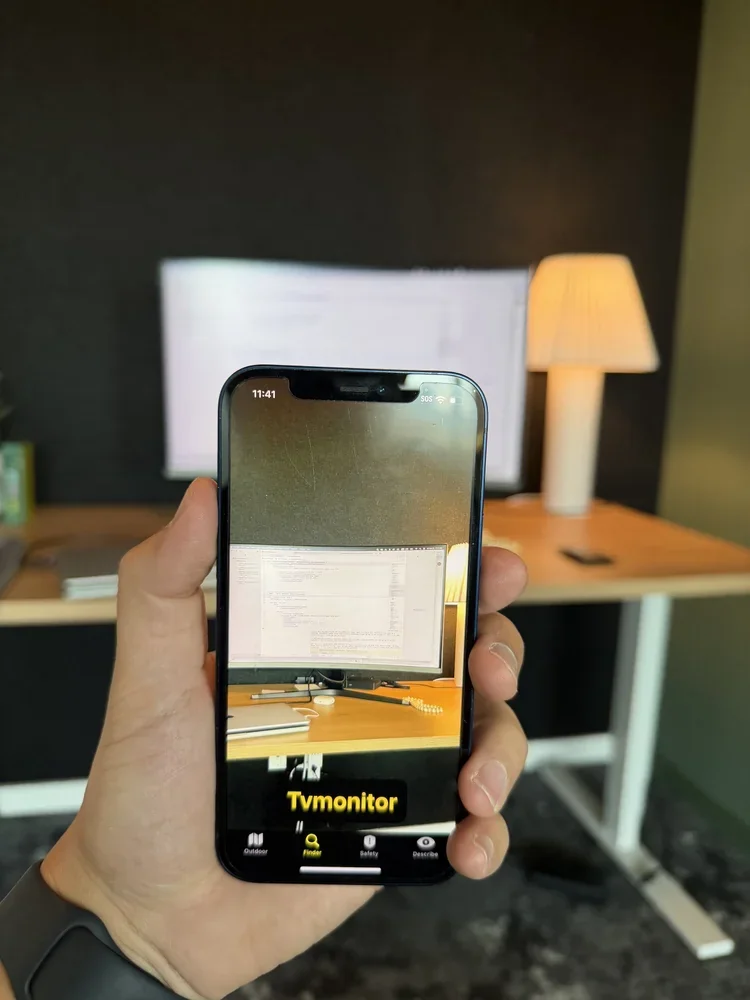
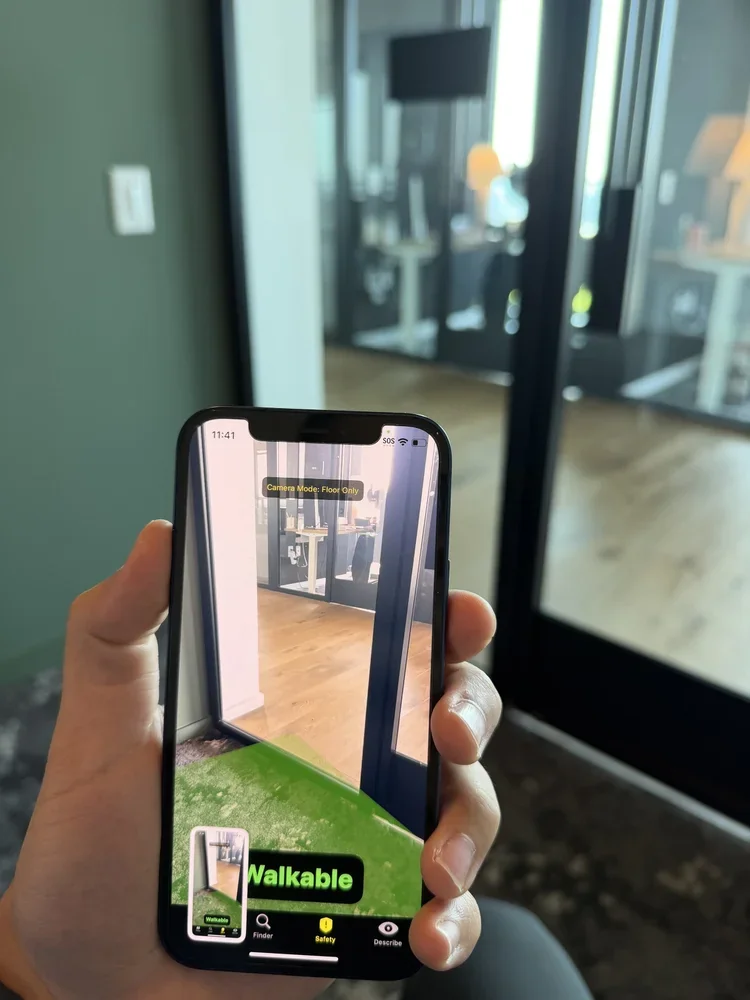
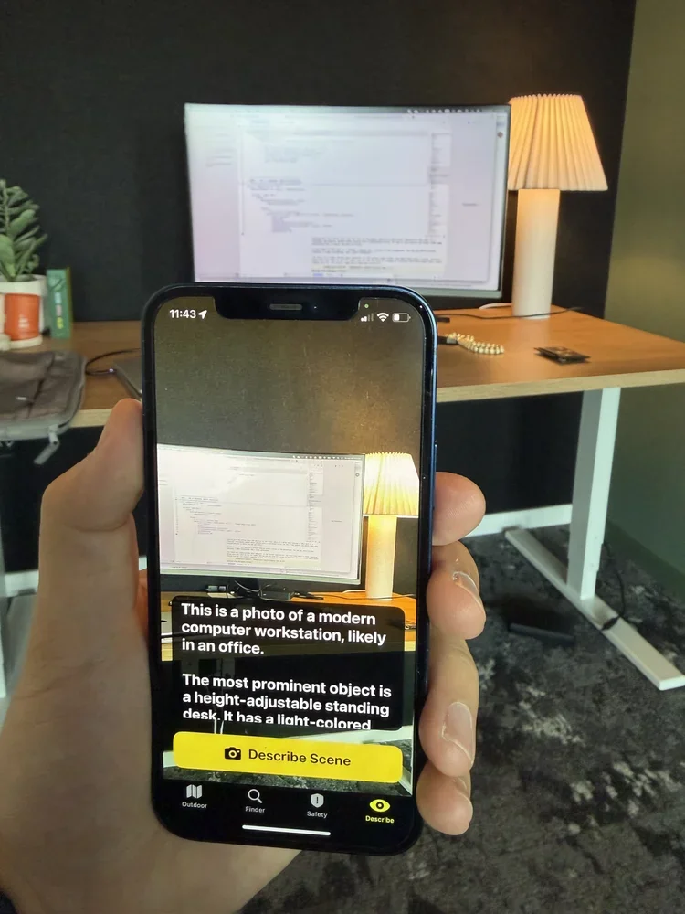
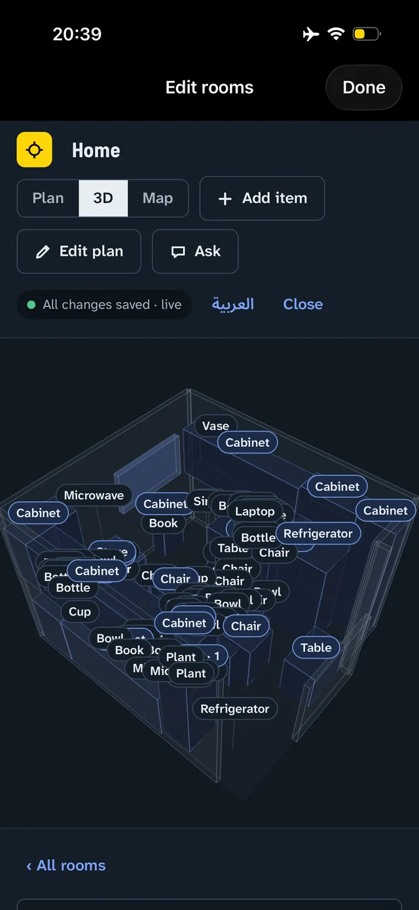
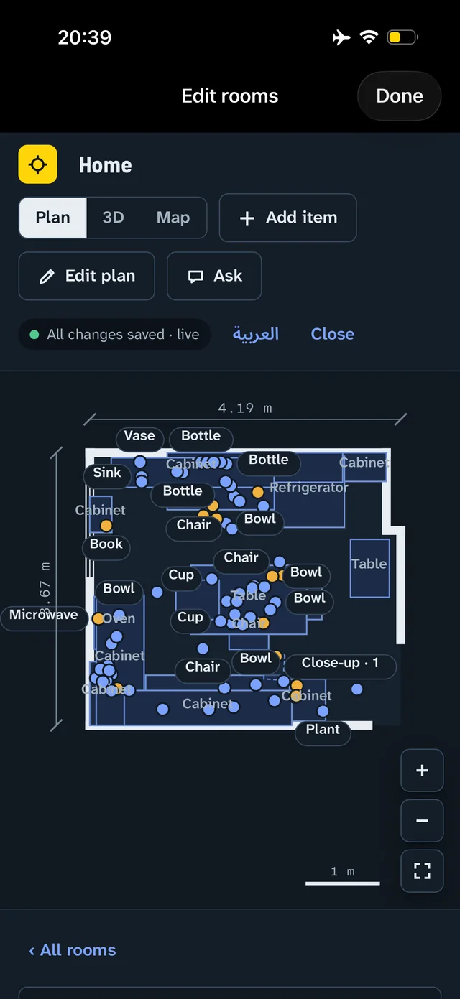
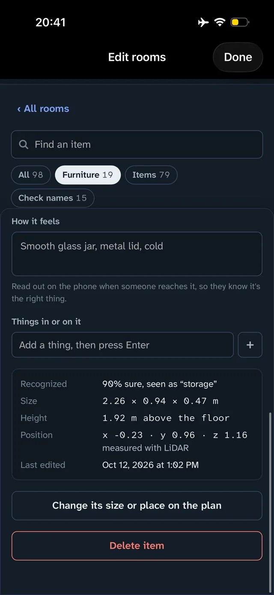

Navigation at the speed of walking.
ApexVision turns an iPhone into a real-time guide for blind and low-vision pedestrians — under 200 milliseconds from camera to spoken cue, with every model running on the phone. No cloud, no connection required, and no video ever leaves the device.
Free to download during the beta; a premium subscription will unlock full features at launch. iPhone today — Android is on the roadmap.
- <200 mscamera to cue, end to end
- On-device100% local — nothing uploaded, ever
- Fully offlineno Wi-Fi or cell service required
- Patent pendingU.S. Provisional 63/917,447
Platforms describe. ApexVision navigates.
Even the biggest scene-description tools say themselves that they aren't meant for navigation. ApexVision is built for exactly that job: a pedestrian, mid-street, who needs an answer immediately.
Cloud assistants take several seconds to answer. A crosswalk allows less.
ApexVision responds in under 200 ms — fast enough to guide a walking pace.
Camera-streaming apps send footage of your home to servers or to strangers.
Every model runs on the phone. Nothing is uploaded, ever.
Dedicated assistive wearables cost $3,500–$4,500, out of reach for most who need them.
ApexVision runs on a standard iPhone — no dedicated hardware.
Most assistive tools stop working where coverage stops — subways, basements, elevators.
ApexVision works fully offline, with no loss of function.
Three modes, one tap apart
Everything is delivered by audio and haptics — no usable sight is needed.
Finder
Name the thing you need — keys, a door, an empty seat — and ApexVision locates it and guides your hand to it.
- Voice-activated object search
- Directional audio guidance, step by step, to the object
- Works indoors and out — no GPS required

Safety
ApexVision reads the street in real time: where the walkable path is, what is in it, and what is approaching.
- Live walkable-path detection with obstacle alerts
- Ground-level and overhead hazard warnings
- Haptic and spatial-audio cues, timed for walking pace

Describe
One tap, and the scene is spoken aloud: the layout of the room, the people in it, the sign above the counter.
- Rich scene descriptions on demand
- People, objects, signage, and layout
- Voice follow-ups: “What's in front of me?” “Find the exit.”

How it works
The phone sees
The camera streams the world through ApexVision's spatial AI at up to 30 frames per second.
The AI maps the space
Objects, hazards, and walkable paths are identified and placed in 3D within milliseconds.
You get guidance
Spatial audio and haptics translate that understanding into directions you can act on mid-stride.
Voice on demand
Ask a question at any time; scene description and object finding answer instantly.
Whereabouts
Ask where anything is. Scan a room once, then be walked right to it.
Whereabouts is a map of your home that knows where everything is. Scan a room with an iPhone Pro — about a minute of walking around it — and it measures the walls, doors, and furniture, recognizes everyday items, and names what's inside each drawer you open. From then on, anyone you share the map with can ask where something is and be walked right to it. Built with blind and low-vision users first, it works end to end by voice and with VoiceOver; finding works on any iPhone with iOS 17 or later, and scanning needs a Pro model.



- Sizes and positions are measured with LiDAR, down to each item
- Open a drawer or closet and tap “Look inside” — everything in it is listed, pinned where it lies
- Ask by voice and be walked there: turn-by-turn around the furniture, with your hand guided over the last half meter
- “How it feels” notes are read aloud on arrival; screens, directions, and voice work in English and Arabic
The app is free, and so is your first room. Whereabouts is coming to open testing on TestFlight, with the App Store release to follow; details and pricing are at whereabout.store.
For kitchen and wardrobe manufacturers
Ship every installation with a searchable map of its storage. When a home is fitted with your kitchens and wardrobes, the family can ask where things are stored and be guided to them — so the space stays as easy to live in as the day it was installed.
Milestones
ApexAI's products grew out of peer-reviewed computer-vision research, including work recognized with a Best Paper Award at the IEEE/CVF WACV 2025 Workshops and four top-6 finishes in the NVIDIA AI City Challenge (2021–2024).
- 2026Pilot deployment underway with a regional accessibility center, with structured outcome measures
- 2026Selected for NobleReach's Science2Venture accelerator (Cohort 1) — an NSF-funded program that chose three startups across Tennessee
- 2026CodeStock — Most Impactful Company
- 2026Driving-simulator testing presented at the TRB Annual Meeting
- 2025U.S. provisional patent filed: multimodal real-time pedestrian navigation (63/917,447)
- 2025NSF I-Corps customer discovery — 50+ interviews with blind and low-vision users
- 2025Presented at the Accessibility Awareness Summit and at an IEEE/CVF ICCV 2025 workshop
Research and development supported by
- University of Tennessee — UT-ORII
- UT Chattanooga — CUIP
- NSF I-Corps
- Meta Reality Labs
- NobleReach Foundation
Why we're building this
“Google Maps didn't detect construction work, and I found myself in the middle of the road.”
“If I lose my glasses, I can't find them. I want something that doesn't need to be carried or worn.”
“I need something that can read things at a distance and help me find objects.”
“Thank you for helping us see.”
For agencies and organizations
If you run a vocational-rehabilitation program, an accessibility or independent-living center, an O&M practice, or a school district, we run structured pilots with you — training for your staff, defined outcome measures, and a direct line to the founding team.
- A short privacy review. No video or personal data ever leaves the device, so there is no cloud vendor to assess and no footage-retention policy to write.
- No IT project. Works fully offline on standard iPhones — nothing to integrate, host, or network.
- Evidence you can use. Pilots produce usage data and outcome measures you can take to your own stakeholders.
Or write directly to magedshoman@apex-ai.site — it reaches the founder.
Team
Maged Shoman, PhD
Founder & CEO
Architect of ApexVision. 10+ years in computer vision, deep learning, and real-time safety systems; research faculty at UT-ORII.
Usman Ahmed, PhD
Chief Development Officer
10+ years applying machine learning to real-world navigation and safety challenges.
Osama Osman, PhD
Product Strategy & Mobility Technology Advisor
20+ years driving mobility, ITS, and connected-vehicle innovation in the U.S. and globally.
Mina Sartipi, PhD
Strategic Partnerships Advisor
Smart-cities expert; built Chattanooga's MLK Smart Corridor and leads UTC's Center for Urban Informatics and Progress.
Bob Vanderhoff
Business Advisor
Founder & CEO of 35 Advisory Group; 40+ years in go-to-market and M&A.
Get in touch
Prefer email?
For pilot inquiries from agencies and organizations, put “Pilot” in the subject line and we'll prioritize it.